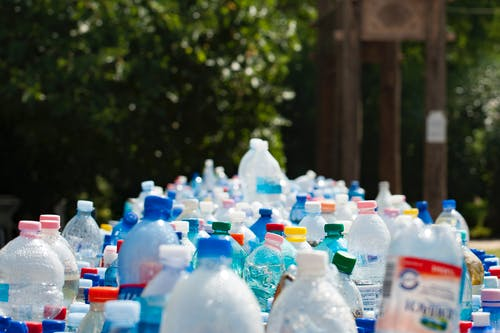

The NYC Department of Sanitation provides annual reports on the distribution of diverted recyclable and compostable materials. In these reports, average daily tons of recycling are reported along with the programs through which these donations take place. Some of the recycling and composting is facilitated directly through the DSNY (Department of Sanitation) and some is done through department-supported programs, individuals collecting, and through recycling drives hosted by organizations.
There are almost 20 different kinds of recycling programs reported by the DSNY. Along with what could be considered traditional recycling programs of paper, plastic, glass, and metal, there are programs such as the one where every January the NYC Department of Sanitation picks up Christmas trees for composting. DSNY also facilitates a program at Rikers Island Correctional Facility for composting food waste from the kitchens and cafeterias there. NYC Residents can even drop off their hazardous waste products in select DSNY drop-off facilities for safe recycling.
Programs were introduced throughout the years that DSNY reported recycling totals. In FY 2014, the Re-fashionNYC textile donation and E-cycleNYC electronic waste donations program. Although DSNY already accepted textile and electronics recycling through various other methods and organizations, they partnered with nonprofits specifically for this. One of the programs that remained a mystery to me is the Hard Cover recycling program that was introduced in FY16. I searched and searched and was unable to figure out what it could be. I think that further reporting and interviewing someone at the Department of Sanitation could provide to be helpful.
The non-DSNY sources for recycling range. Individuals can recycle their cans and bottles, compost their yard waste and leaves, and can safely dispose of their electronics at e-waste centers. Non-profit organizations recycle and compost through collection drives. Retail stores can even participate in the donation of textiles. There is apparently a program for recycling plastic bags for retail, as well. However, in the ten years of reports available from the Department of Sanitation, this program has had no data reported.
The DSNY (Department of Sanitation) collects both from the curbside and from containers. The curbside collections are 90% residential and 10% from institutions, according to a DSNY annual report. Curbside recycling is collected once a week in bags or from cans set out in front of the curb. In FY 2013, DSNY began a pilot program to collect organics curbside. 90% of containerized collections are from institutions and 10% from large residential buildings, according to DSNY. These collections happen at varying frequencies and from containers of varying sizes. It's much rarer for containers to be used for metal/glass/plastic recycling. Residents tend to recycle through curbside pick up instead of collecting recycling in a container, according to the same report.
{kind=link}